분명 좋은 표현이 있었는데
어느 영상에서 봤는지 기억이 나지 않습니다.
영상 자막을 붙여넣으면 문장 정리부터 번역, 반복연습, 작문훈련까지.
내가 공부하고 싶은 영상으로 만드는 영어 학습 워크북.
Google Sheets 기반 · 나만의 문장으로 학습
학습 과정 살펴보기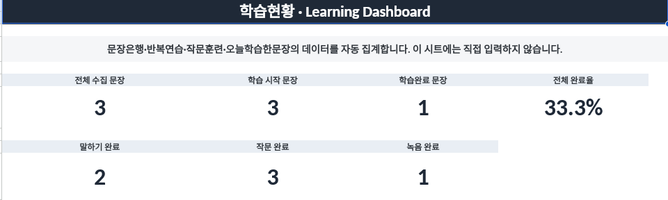
영상을 볼 때는 이해했던 표현도 막상 직접 말하거나 쓰려고 하면 잘 떠오르지 않습니다.
어느 영상에서 봤는지 기억이 나지 않습니다.
며칠 지나면 문장이 잘 떠오르지 않습니다.
다시 찾아보거나 복습하지 않습니다.
직접 영어로 말하거나 쓰려면 막힙니다.
문장을 정리하는 번거로운 작업은 줄이고, 실제 영어 연습에 더 집중할 수 있도록 구성했습니다.
공부하고 싶은 YouTube 영상의 영어 자막을 복사해 붙여넣습니다.
자막을 문장 단위로 나누고 중복 문장을 제외합니다.
영어 문장과 한국어 뜻이 정리되어 학습 자료로 쌓입니다.
같은 문장을 반복해서 말하고, 한국어 뜻을 보며 직접 영어로 써봅니다.
읽기·작문·녹음 여부를 체크하며 학습을 관리합니다.
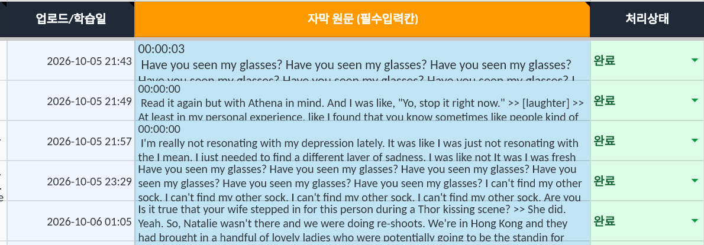
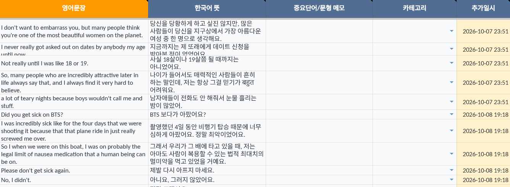
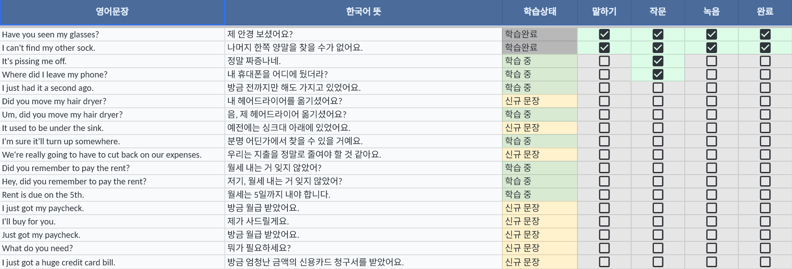
영어 자막을 붙여넣고 정리 기능을 실행하면,
문장을 하나씩 옮겨 적을 필요 없이
나만의 문장은행이 만들어집니다.
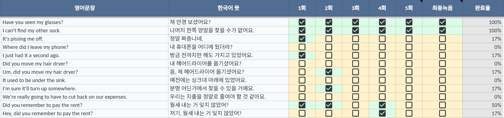
문장을 이해하는 것과 실제로 말하는 것은 다릅니다.
저장한 영어 문장을 소리 내어 반복하고,
연습 횟수와 최종 녹음 여부를 체크하세요.
체크한 6개 항목을 기준으로 연습 완료율이 자동 계산됩니다.
한국어 뜻만 보고 영어 문장을 직접 작성한 뒤,
정답 보기 체크로 원래 문장을 확인하세요.
내 문장과 정답의 차이를 비교하고 기록할 수 있습니다.
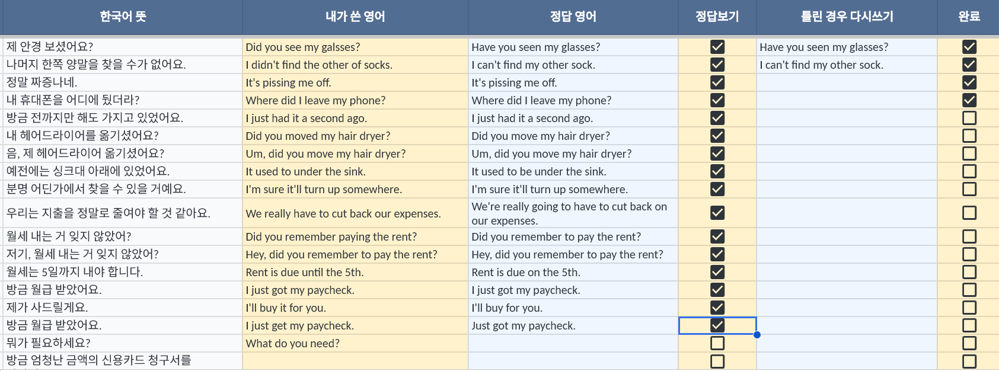
문장을 모아두기만 하면 어떤 문장을 연습했고,
어떤 문장을 다시 공부해야 하는지 알기 어렵습니다.
읽기·작문·녹음과 완료 여부를 체크하며 학습 기록을 관리하세요.
공부한 문장이 쌓일수록 전체 학습 현황을 직접 확인하기는 어려워집니다.
수집한 문장 수, 학습 시작·완료 문장 수, 전체 완료율을 한눈에 확인하세요.
말하기·작문·녹음 완료 수치도 함께 살펴볼 수 있습니다.
별도의 프로그램 설치 없이 Google Sheets에서 사용할 수 있습니다.
먼저 공부할 영상의 영어 자막을 준비해 주세요.
NoteGPT에 학습할 YouTube 영상 주소를 입력합니다.
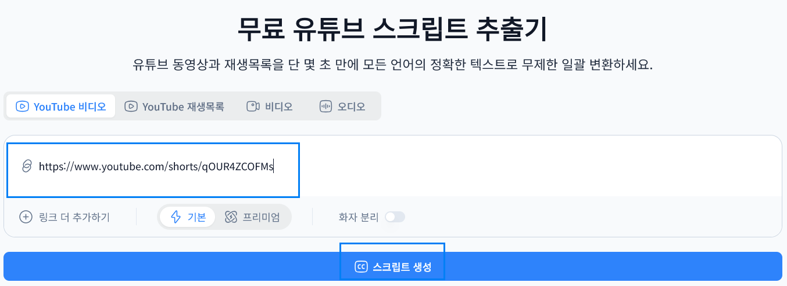
영상에서 추출된 자막을 확인하고 학습에 사용할 내용을 복사합니다.
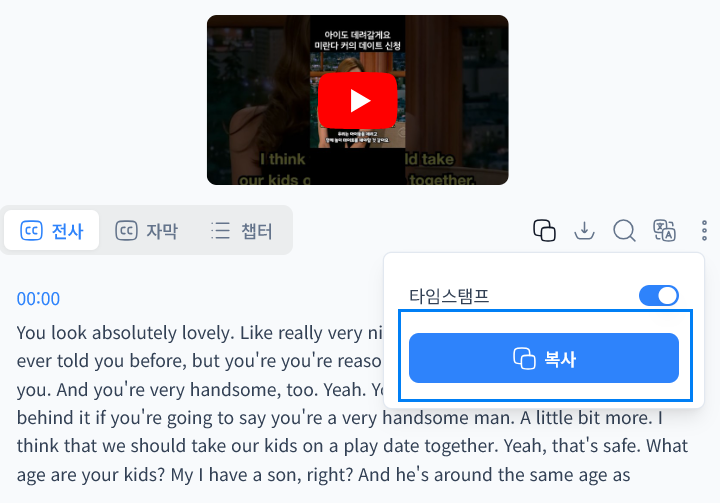
복사한 자막을 자막원본 시트에 붙여넣고, 상단 ‘영어문장 자동정리 → 자막 정리 실행’을 선택합니다.
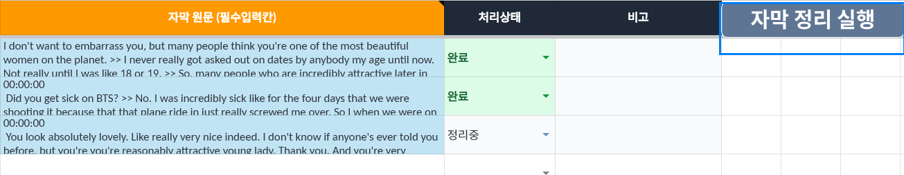
문장은행에 추가된 문장을 확인한 다음 반복연습과 작문훈련을 시작합니다.
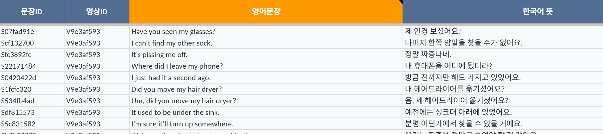
공부하다 보면 필요 없는 문장이 생기거나 자막을 잘못 입력할 수도 있습니다.
학습 데이터를 정리하고 다시 시작할 수 있는 관리 기능을 제공합니다.
학습하지 않을 문장을 선택해 관련 학습 기록과 함께 삭제할 수 있습니다.
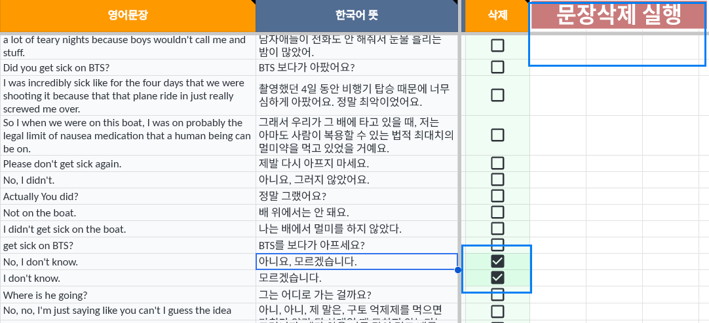
최근 입력한 자막에 문제가 있다면 해당 입력과 관련된 학습 데이터를 함께 되돌릴 수 있습니다.
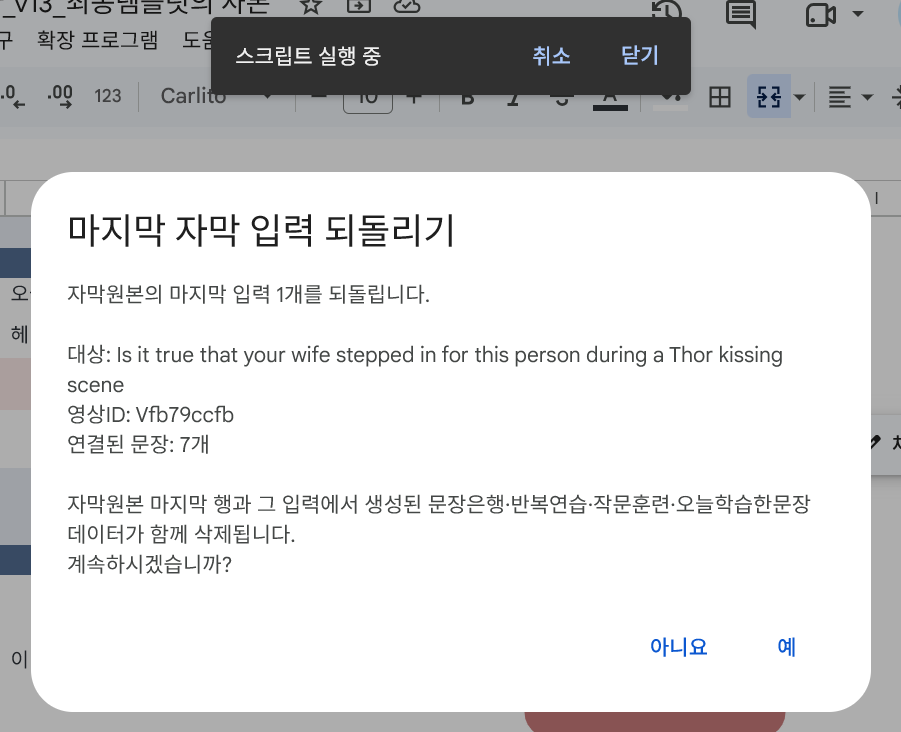
처음부터 다시 시작하고 싶을 때 전체 학습 데이터를 초기화할 수 있습니다. 실행 전 확인 절차를 거칩니다.
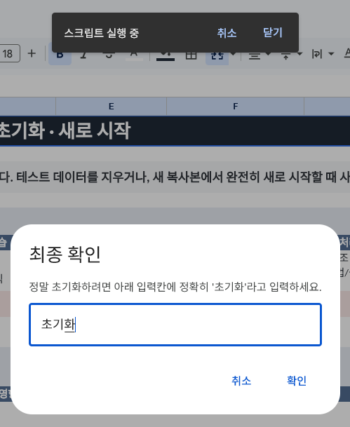
YouTube에서 발견한 영어 문장을 모으고, 반복해서 말하고, 직접 써보세요.
내가 선택한 영상으로 나만의 영어 학습 워크북을 만들 수 있습니다.
영어 학습 방식과 필요한 기능을 확인하기 위한 짧은 설문입니다.